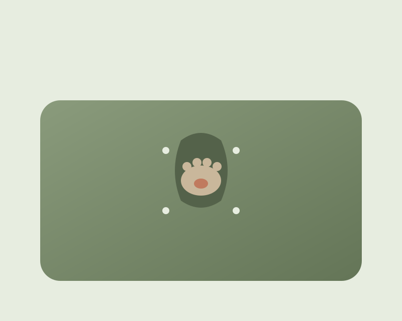

Movaro Cat Calm Wrap
A vet-designed calming wrap that helps your cat feel secure while you handle nail trims, medication, brushing, ear care and vet visits — calmly, and on your own.
What's included
- ✓ Movaro Cat Calm Wrap$79
- ✓ Calm Start Guide$14 value
- ✓ Size Finder$9 value
- ✓ Calming spray sample (while supplies last)$8 value
- ✓ 60-Day Calm GuaranteeIncluded
What cat parents wonder first
"But my cat would never allow this."
That's exactly who Movaro is for. Introduced gently — with sniffing, treats and short sessions — even handling-averse cats tend to settle as the swaddle pressure helps them feel secure. Your Calm Start Guide shows you how.
"Is this stressful?"
The aim is the opposite of stress. Soft, breathable fabric and gentle, even pressure help your cat feel calm and contained — and you only ever uncover the small area you're working on, for a short time.
"What if the size is wrong?"
Use our Size Finder to choose with confidence, and when in doubt, size up. If the fit isn't right, our 60-Day Calm Guarantee makes returns and exchanges easy.
Open only what you need
Movaro's thoughtful openings let you reveal a single paw, an ear, or the shoulder-blade area — while the rest of your cat stays cozy and contained.
- ✓ Paw-by-paw access for calm nail trims
- ✓ Mouth access for oral meds
- ✓ Ear openings for drops & cleaning
- ✓ Shoulder access for injections & subcutaneous fluids
Comfort your cat can feel
No crinkly plastic, no harsh edges. Movaro uses breathable, gentle fabric and adjustable soft fasteners — snug enough to soothe, never tight.
- ✓ Breathable, skin-friendly fabric
- ✓ Quiet — nothing to startle a sensitive cat
- ✓ Adjustable, secure, comfortable fit
- ✓ Machine-washable & easy to care for
Movaro vs. the workarounds
| Movaro Wrap | Towel "burrito" | Cheap grooming bag | Vet / groomer | |
|---|---|---|---|---|
| Keeps cat calm | ✓ | ~ | ✕ | ~ |
| Targeted access | ✓ | ✕ | ~ | ✓ |
| Adjustable fit | ✓ | ✕ | ~ | ✓ |
| Soft & quiet | ✓ | ✓ | ✕ | ~ |
| Works solo | ✓ | ✕ | ~ | ✕ |
| 60-day guarantee | ✓ | ✕ | ✕ | ✕ |
Frequently asked
Ready for calmer care?
Get the Movaro Cat Calm Wrap with free US shipping and a 60-Day Calm Guarantee.